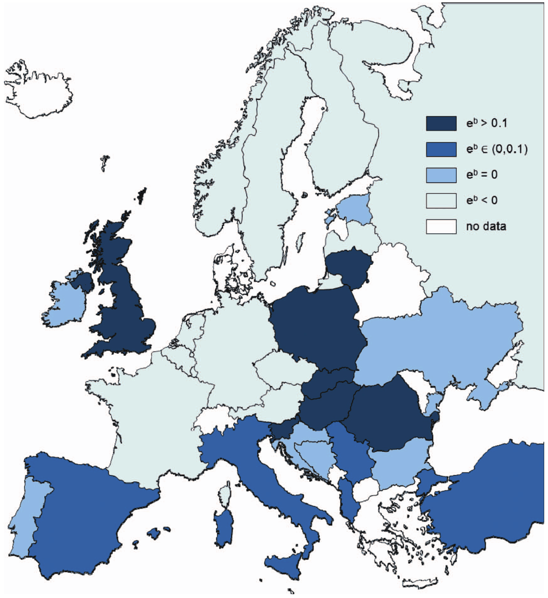
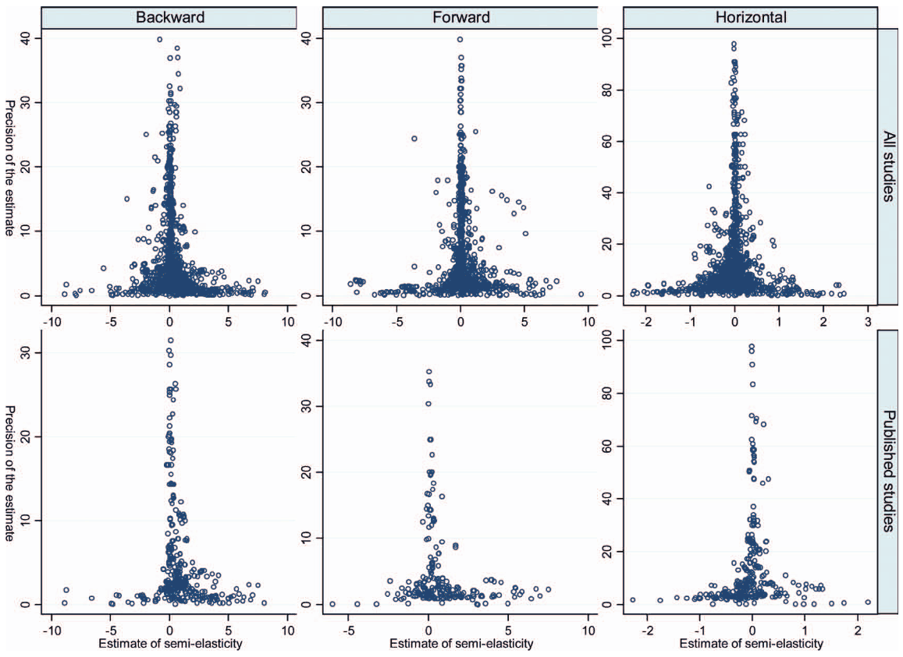

Survey Article: Publication Bias in the Literature on Foreign Direct Investment Spillovers
Tomas Havranek, Zuzana Irsova (2012), "Survey Article: Publication Bias in the Literature on Foreign Direct Investment Spillovers." Journal of Development Studies 48(10): 1375-1396. https://doi.org/10.1080/00220388.2012.685721.
TOMAS HAVRANEK*,** & ZUZANA IRSOVA**
Economic Research Department, Czech National Bank, Prague, Czech Republic, *Institute of Economic Studies, Charles University in Prague, Czech Republic
Final version received January 2012
Abstract
In this article we conduct a large quantitative survey of the literature on horizontal and vertical spillovers from foreign direct investment (FDI). We create a unique database of spillover estimates for each country examined in the literature. Next, we estimate the average effect corrected for publication selection bias (the preferential selection of positive and significant estimates for publication). Our results suggest that an average reported estimate of backward spillovers is statistically significant. Publication selection is evident only among studies published in peer-reviewed journals, and only among the estimates that authors consider most important. Authors with small data sets engage in more publication selection. The intensity of selection in the literature decreases over time, which supports the economics-research-cycle hypothesis.
I. INTRODUCTION
Policy-makers, especially in transition and developing countries, usually encourage inward FDI (foreign direct investment) in expectation that domestic firms in the same sectors benefit from know-how brought by foreigner investors. Moreover, many policy-makers believe that firms in supplier sectors benefit from direct knowledge transfers from foreigners, and perhaps also that firms in customer sectors benefit from higher-quality intermediate inputs produced by foreigners.
With an allusion to the production chain, the effect of foreign presence on the productivity of domestic competitors is typically labelled horizontal spillovers, the effect on domestic suppliers as backward spillovers, and the effect on domestic customers as forward spillovers; backward and forward spillovers together are called vertical spillovers. Although neither a necessary nor sufficient condition for the provision of government subsidies for FDI, spillover effects are highly policy-relevant. In consequence, the search for spillovers has given rise to a burgeoning stream of empirical literature in development economics, and we investigate 57 such papers in this meta-analysis.
Horizontal spillovers are usually thought to occur through three main channels. The first channel is the competition effect (for example, Aitken and Harrison, 1999): the entry of foreign firms increases competition in the domestic market. Increased competition forces domestic firms to use their inputs more efficiently, boosting their productivity. Nonetheless, increased
competition also reduces the opportunities of domestic firms to exploit returns to scale, reducing their productivity. The second channel is the demonstration effect (for example, Blomstrom and Kokko, 1998): foreign investors bring technology more advanced than that of domestic firms, especially in transition and developing countries. In this way, foreigners ‘demonstrate’ up-to-date technology to domestic firms, which imitate and implement it. The third channel is labour turnover (for example, Görg and Greenaway, 2004): foreign firms train local employees, who accumulate know-how and experience with modern technology. Eventually, locals change employer or start a firm of their own, diffusing knowledge further.
Foreign affiliates will try to prevent the transfer of technology to their competitors; that is, they will try to minimise the positive effects of demonstration and labour turnover. Therefore if the detrimental effects of competition prevail, horizontal spillovers altogether may well become insignificant or even negative. On the other hand, foreigners have incentives to provide assistance to their local suppliers, since they want to ensure a high quality and on-time delivery of inputs.
Indeed, anecdotal evidence indicates that local suppliers may benefit from the interactions with foreign investors, even if neither investors nor suppliers are particularly knowledge-intensive. In a recent interview conducted by the authors of this article, the chief executive officer of a Czech printing house describes how the company benefited from the contacts with a Japanese investor: The investor, doing business in electronics, was seeking a local contractor to print millions of instruction manuals for the European market. After the Czech company had won the contract, the representatives of the Japanese investor inspected the company and requested specific improvements in quality management. The representatives had gained experience from their contacts with suppliers in Japan, and they asked no compensation for the advice. The Czech printing house, in turn, applied the improvements also in other areas of production.
Therefore, the recent literature (Javorcik, 2004; Blalock and Gertler, 2008) emphasises vertical linkages between foreign investors and domestic firms. The per-job value of spillovers stirred up by linkages can be compared with the amount of government subsidies, as Haskel et al. (2007)
do; hence for policy recommendations precise estimates of spillovers are required. Since the results of individual studies vary broadly, a quantitative literature survey, meta-analysis, represents a useful method to obtain robust estimates of spillovers (Stanley, 2001). If, however, some particular results are more likely to be published (for example, those consistent with the mainstream intuition about spillovers outlined in the paragraphs above), a simple average of the reported results will be a biased estimate of the underlying spillover effect. The importance of publication selection bias in the spillover literature was stressed already by the first meta-analysis on this topic, Görg and Strobl (2001).
Publication bias has been identified in many areas of economics research (Doucouliagos and Stanley, 2012). It stems from the preference of authors, editors, or reviewers for some particular results; usually those that are statistically significant or consistent with theory (Stanley, 2005).
Publication bias can seriously exaggerate the magnitude of the underlying effect, which has been the case, for example, of the negative effects of minimum-wage increases on employment (Doucouliagos and Stanley, 2009), the price elasticity of gasoline demand (Havranek et al., 2012), or the positive effects of currency unions on trade (Havranek, 2010). In a large survey of economics meta-analyses, Doucouliagos and Stanley (2012) find that the magnitude of publication bias decreases with more theory competition in the particular research area. Stanley et al. (2008) show that publication selection is a complex phenomenon affected, among other things, by the characteristics of individual researchers. To our knowledge, however, no study has yet systematically examined the micro-level determinants of publication bias.
In contrast to the earlier meta-analyses on FDI spillovers (Görg and Strobl, 2001; Meyer and Sinani, 2009), we examine backward and forward spillovers in addition to horizontal spillovers.
Using a large data set, we employ modern meta-analysis methods developed by Stanley (2005, 2008) to estimate the underlying spillover effects and the magnitude of publication bias. We present individual surveys for each country inspected in the literature and construct a unique cross-country data set of estimated spillovers. Furthermore, we retrieve estimates of publication
bias for each study and examine how the intensity of publication selection depends on the characteristics of the authors, such as affiliation, experience, and tenure pressure.
The rest of the article is structured as follows: section II discusses how FDI spillovers are measured, section III describes how we extracted information from primary studies, section IV presents the estimation of publication bias and true spillover effects, section V focuses on the determinants of publication bias, and section VI concludes the article. The Appendix tables provide meta-analyses for individual studies and countries.
II. MEASURING PRODUCTIVITY SPILLOVERS
To estimate the size of productivity spillovers from foreign direct investment, researchers usually examine the relation between foreign presence and the productivity of domestic firms. The variable corresponding to foreign presence is defined depending on the type of spillover under investigation. For horizontal spillovers, foreign presence simply denotes the ratio of foreign activity to the total activity in the domestic firm’s own sector. For backward spillovers, foreign presence is defined as the ratio of foreign activity in sectors that buy intermediate goods from the domestic firm. Finally, in the case of forward spillovers foreign presence denotes the ratio of foreign activity in sectors that sell intermediate goods to the domestic firm. Most researchers include all these variables in one regression, together with a number of control variables:
where i denotes domestic firms and j denotes sectors.
Approximately 90 per cent of all studies use firm-level panel data to estimate Equation (1). A
few cross-section sector-level studies have been published since 2000, even though Görg and Strobl (2001) showed that cross-section studies systematically overstate horizontal spillovers.
Most authors use the share of sector output as a measure of foreign presence, but some use shares of sector employment or equity. The most common control variables include sector competition, demand in downstream sectors, and a measure of absorption capacity (such as the technology gap between domestic and foreign firms or domestic firms’ expenditures on research and development).
The majority of authors employ total factor productivity (TFP) as the measure of productivity, while others use output, value added, or labour productivity for the response variable. When computing TFP, most authors take into account the endogeneity of input demand and use the Levinson-Petrin or Olley-Pakes method, but 10 per cent of all estimates are computed using ordinary least squares. Approximately a half of all studies estimate Equation (1)
in differences. A general-method-of-moments estimator is employed by 9 per cent of the studies, and the translog production function instead of the usual Cobb-Douglas function is employed by 8 per cent of them.
Despite these various methods, the results of all studies boil down to the estimates of coefficients e from (1), which are directly comparable whenever the log-level specification is used.
(The heterogeneity of estimates with respect to different estimation techniques in this literature is explored in detail in a companion article, Havranek and Irsova, 2011.) The coefficients represent the semi-elasticity of the productivity of domestic firms with respect to foreign presence:
that is, approximately the percentage increase in domestic productivity associated with a 1 percentage point increase in foreign presence. Semi-elasticity has been previously used in meta-analysis, for example, by Rose and Stanley (2005) and Feld and Heckemeyer (2011), and represents the natural choice of summary statistic for the spillover literature.
III. STUDIES ON SPILLOVERS FROM FDI
Because Görg and Strobl (2001) conducted a meta-analysis of horizontal spillover studies published before 2000, in this article we focus on studies originated after 2000, and especially on the new subset of the literature, vertical spillovers (another reason for focusing on post-2000 studies is that the earlier studies are often not directly comparable). Our intention is to collect all studies estimating backward and forward spillovers; nonetheless, if these studies also estimate horizontal spillovers, we use that information as well. Thus our meta-analysis can be viewed as a complete meta-analysis of vertical spillovers and a partial meta-analysis of horizontal spillovers.
We searched the EconLit, Scopus, Google Scholar, and RePEc databases for prospective studies. Additionally we examined the references of all identified studies published in the last year of our sample, 2010, and also the citations of the most influential article on vertical spillovers, Javorcik (2004). We excluded a few studies that estimated vertical spillovers but that did not define foreign presence as a ratio and hence could not be used to compute semi-elasticity (for example, Kugler, 2006; Bitzer et al., 2008). Approximately 20 per cent of all studies in our sample could be included only thanks to the cooperation with authors, who often sent us the standard errors of the estimated elasticities. Following the advice of Stanley (2001), ‘better err on the side of inclusion,’ we did not exclude any study based on the form, place, or language of publication.
The last study was included on 31 March 2010. We do not update studies after that date – for example, if a working paper is included in our data set and gets published after 31 March 2010, we still use the working-paper version.
We collect all estimates reported in the studies. It would be inefficient to discard data; moreover, often it is not clear which estimate the authors prefer. Later in the analysis, as a robustness check, we use averages of all reported coefficients from each study. We gather 57 studies that include 3626 estimates of elasticity for different types of spillover. Coding such a large number of observations manually is a laborious exercise, and it is difficult to avoid mistakes in the process. To minimise the danger of typos, both of us collected all data independently; it is unlikely that both collectors would make the same mistake. At the end we compared our data sets, reached consensus for every data point that differed, and retrieved the data set.
We provide a summary of all studies in Appendix Table A1 and Table A2 and display representative spillover coefficients for each study. The representative semi-elasticities are estimated as inverse-variance-weighted averages with individual random effects to take into account heterogeneity within studies; the method is called the simple random-effects meta-analysis. Additional details on data properties and collection can be found in the working-paper version of this article, Havranek and Irsova (2010).
Most narrative reviews of empirical literature only consider studies published in high-quality journals. We begin the analysis with a set of such studies to illustrate how the restriction of the sample may, under realistic conditions, lead to biased conclusions concerning the strength of the examined phenomenon. We define high-quality journals for spillover literature as the leading outlets in international economics (Journal of International Economics), international business (Journal of International Business Studies), and development economics (Journal of Development Economics). Naturally, one study published in the American Economic Review is also included in the subset, increasing the number of identified studies to seven. The selected journals have the highest impact factor in the sample, and even if we added the journal with the next highest impact factor (The World Economy), the inference would be similar.
Table 1 summarises the qualitative results of studies published in high-quality journals. We add Kugler (2006) to the table since the study is frequently cited in the literature, even if its quantitative results are not comparable with studies in our sample; he does not estimate semi-elasticity, hence we cannot include the study in our quantitative analysis. From Table 1 it is apparent that the evidence for positive and significant backward spillovers is unequivocal, but no such consensus emerges for forward and horizontal spillovers: some researchers report positive effects of forward linkages and negative effects of horizontal linkages; others find insignificant effects.
| Study | Journal | Backward | Forward | Horizontal |
|---|---|---|---|---|
| Javorcik (2004) | American Economic Review | + | ? | ? |
| Bwalya (2006) | Journal of Development Economics | + | - | |
| Kugler (2006) | Journal of Development Economics | +a | +a | ? |
| Blalock and Gertler (2008) | Journal of International Economics | + | ? | |
| Javorcik and Spatareanu (2008) | Journal of Development Economics | +b | - | |
| Liu (2008) | Journal of Development Economics | +c | ? | +c |
| Blalock and Simon (2009) | Journal of Int. Business Studies | + | ? | |
| Liu et al. (2009) | Journal of Int. Business Studies | + | + | - |
Notes: +, −, and ? denote the finding of positive, negative, and insignificant spillover effects. aThe author does not discriminate between backward and forward spillovers. bPositive effect reported only for investments with joint foreign and domestic ownership. cPositive long-run effect, negative short-run effect.
Taking a simple average of all estimates reported in high-quality journals confirms this qualitative observation. The average semi-elasticity reaches 1.14 for backward spillovers, 0.54 for forward spillovers, and −0.13 for horizontal spillovers, all significant at the 5 per cent level.
Most of the studies concentrate on backward spillovers and provide estimates of forward and horizontal spillovers only as a bonus. The practice reflects the recent view that domestic firms supplying foreign affiliates are the most likely beneficiaries of technology transfer and that the effect on competitors and customers is less important.
It is remarkable that the average estimates of spillovers do not change significantly if we broaden the sample to all published studies, but the averages shrink a lot if unpublished studies are considered as well. If unpublished studies are included, the average backward spillover reaches only 0.27, the average forward spillover is negative (−0.09) and insignificant, and the average horizontal spillover is negligible (0.01). All of this points to selection bias in published studies, which will be the topic of section IV.
Because the studies in our sample estimate spillover coefficients for many different countries, they allow us to construct a unique cross-country database of spillovers from foreign direct investment. The database is summarised in the Appendix in Table A3; we use the simple random-effects meta-analysis to estimate the average backward, forward, and horizontal spillover based on the entire available literature for each country. The results for European countries are depicted in Figure 1 (the graphical presentation of our results is not convenient for other continents as some large countries have not yet been studied in the spillover literature). It is apparent that the effects of backward linkages are relatively heterogeneous. While it is difficult to draw general conclusions, the figure, in line with Bitzer et al. (2008), suggests that central-eastern European countries may benefit relatively more from foreign investment than their advanced western-European counterparts. The average backward spillovers, estimated by the simple random-effects meta-analysis, also significantly differ between the income categories of countries in our sample: spillovers are larger for developing economies (0.22) than for developed economies (0.09). The cross-country heterogeneity in the sample is examined in detail in a companion article (Havranek and Irsova, 2011); in this article we focus on publication bias.
IV. QUANTIFYING PUBLICATION BIAS
Publication selection bias in the FDI spillover literature was first examined by the well-known meta-analysis of Görg and Strobl (2001). Following Card and Krueger (1995), they used two distinct tests of publication bias, and both tests indicated the presence of publication bias in the

literature. Nevertheless, the number of observations available to Görg and Strobl (2001) for the tests was only 23 and 16, respectively. We revisit the issue of publication bias in this broad literature taking the advantage of three times more new primary studies published after 2000 and more than 1,000 estimates for each type of spillover.
The first test of publication bias draws on Begg and Berlin (1988). It examines the relation between the reported t-statistic of the spillover coefficient and the number of degrees of freedom available for the estimation. Görg and Strobl (2001) argue that, in the absence of publication bias, the absolute value of t-statistic should increase with more degrees of freedom (roughly speaking, more observations make the estimation more precise and increase statistical significance). Specifically, Card and Krueger (1995) explain that the logarithm of the absolute value of the t-statistic should be directly proportional to the logarithm of the square root of the
number of degrees of freedom. As Stanley (2005) notes, it makes no practical difference whether
the number of observations or degrees of freedom is used for this test, and because spillover
studies directly report the number of observations, we employ the following specification:
where if no publication bias is present. The specification is estimated separately for each type of spillover, and the results are summarised in Table 2. Similarly to Görg and Strobl (2001), we reject the hypothesis ; the result of the test is the same for horizontal, backward, and forward spillovers.
Does this really mean that we have found evidence for publication selection bias? Stanley (2005) and Doucouliagos and Stanley (2009) show that specification (3), emphasized by both Card and Krueger (1995) and Görg and Strobl (2001), is not a proper one to test for publication bias. For example, consider the case when there is no genuine empirical effect. Since here we have and , the absolute value of t-statistic does not increase with more observations, even though more observations reduce standard errors. Hence, if a weak relation between the t-statistic and the number of observation is found, it may suggest either the presence of publication bias or the absence of the underlying empirical effect.
Stanley (2005) argues that specification (3) should be interpreted as a test for a genuine empirical effect. Note that the relationship between the absolute value of the t-statistic and the number of observations is always positive and significant in Table 2, which may indicate that the underlying spillover effects are different from zero. Stanley (2005), however, warns that this test has large type I errors (false rejection of no relationship), especially if the literature suffers from misspecification biases. Since the meta-analysis of Görg and Strobl (2001) suggests that misspecifications indeed drive some results in this literature (specifically, they find that studies using cross-sectional data overstate spillover effects), we take the evidence from Table 2 with a grain of salt.
Instead, the second test presented by Card and Krueger (1995) and Görg and Strobl (2001) has become the cornerstone of modern meta-analysis, and can be used to detect the significance and magnitude of both publication bias and a genuine underlying effect (Egger et al., 1997; Stanley, 2005, 2008). Before turning to formal regression analysis, it is beneficial to introduce the graphical version of this test (Stanley and Doucouliagos, 2010). The so-called funnel plot is the most common method of detecting publication bias in medical meta-analyses (Sutton et al., 2000). It is a scatter plot of the size of the estimates on the horizontal axis and their precision, usually the inverse of standard errors, on the vertical axis. The most precise estimates will be close to the genuine underlying effect (that is, the top portion of the scatter should be narrow), while imprecise estimates will be more dispersed (that is, the bottom portion should be wide). In
| Backward | Forward | Horizontal | |
|---|---|---|---|
| log √number of observations | 0.112*** | 0.512*** | 0.206*** |
| (0.0355) | (0.0446) | (0.0400) | |
| Constant | −0.253 | −2.187*** | −0.832*** |
| (0.168) | (0.215) | (0.197) | |
| Observations | 1401 | 1067 | 1204 |
| Studies | 56 | 45 | 52 |
| t-stat (H0: α0 = 1) | 25.0*** | 11.0*** | 19.9*** |
Notes: Estimated by OLS; heteroscedasticity-robust standard errors in parentheses. Response variable: logarithm of the absolute value of t-statistic of the estimate of semi-elasticity. ***denotes significance at the 1 per cent level.
sum, the cloud of the estimates should resemble an inverted funnel. Publication bias is then indicated by the asymmetry of the funnel plot: in the absence of publication bias, all imprecise estimates have the same chance of being reported, and the funnel is symmetric.
The funnel plots constructed using estimates from both published and unpublished studies for the three types of spillover are depicted in the top panels of Figure 2. One thing that strikes an economics meta-analyst is the general symmetry of all three funnels: a relatively rare sight considering that the meta-meta-analysis of Doucouliagos and Stanley (2012) finds ‘substantial’ or ‘serious’ publication bias for two thirds of all areas in empirical economics. Close inspection of the funnels, however, reveals slight asymmetries. The right-hand part of the funnel for backward spillovers is a little heavier, suggesting possible selection in favour of positive estimates of backward spillovers. On the other hand, for horizontal spillovers the funnel is slightly skewed to the left, which indicates possible preferential selection of negative estimates. We can identify no sign of bias for forward spillovers, although the funnel is worse-shaped compared with the other two: perhaps there is greater heterogeneity among forward spillovers, which causes some precise estimates to lie far away from the mean value.
Despite its name, publication selection in economics usually is not restricted to published studies. Rational authors are likely to polish (that is, use a particular direction of estimates as a specification check and discard estimates with an unintuitive sign) even early drafts of their papers if they expect that some results are more likely to be accepted for publication. For this reason, most meta-analysts pool published and unpublished papers together when testing for selection bias. If the pattern of publication bias was stronger for published than for unpublished studies, we would have a reason to believe that, aside from self-censorship, there is an additional selection pressure from journal editors and reviewers.

The bottom panels of Figure 2 show funnel plots for the three types of spillover when only published studies are considered. It is apparent at first sight that the slight asymmetries identified earlier in the funnels for all estimates now become much more pronounced. Clear biases emerge, upward for backward spillovers and downward for horizontal spillovers. Such a different direction of publication selection of related coefficients taken from the same literature is surprising.
When the first influential article on backward spillovers was published (Javorcik, 2004), the article in the American Economic Review stressed the contrast between its findings of large positive backward spillovers and negligible horizontal spillovers. Since the consensus at that time was that the evidence for horizontal spillovers was mixed at best (Görg and Greenaway, 2004), Javorcik (2004) argued that researchers ‘have been looking for spillovers in the wrong place.’ This appealing argument has been repeated many times in the burgeoning literature that has followed Javorcik (2004) and that has estimated backward spillovers for different countries.
Now, if authors used this result as a specification check, upward selection bias for backward spillovers and downward bias for horizontal spillovers would follow. This is precisely what the funnel plots suggest.
The interpretation of funnel plots, however, is subjective; asymmetry of the funnel is difficult to detect precisely by mere visual inspection. Thus a formal version of the test for asymmetry is necessary. It follows from rotating the axes of the funnel plot, so that the effect size is now on the vertical axis, and from inverting the values of precision on the new horizontal axis. The inverted scatter plot can be interpreted as a regression relationship (Card and Krueger, 1995; Görg and Strobl, 2001):
where measures the asymmetry of the funnel plot and the strength of publication bias. In the absence of publication bias we would not expect the reported coefficients to be correlated with their standard errors, and the estimates would be randomly distributed around the true effect .
Because equation (4) is heteroscedastic by definition, and the measure of heteroscedasticity is Se (the explanatory variable is a sample estimate of the standard deviation of the response variable; the heteroscedasticity is also apparent from the funnel plots), the specification is usually estimated by weighted least squares (Stanley, 2005):
Though simple, the specification is remarkably efficient for the estimation of both the magnitude of publication bias () and the true effect (), as Monte Carlo simulations show (Stanley, 2008). Because we have a large number of observations, and results within studies are likely to be correlated, we include study dummies in the estimation to purge away individual study effects.1 We use heteroscedasticity-robust standard errors clustered at the study level. As a robustness check, we also use only one estimate per each study; the representative estimate for each study is estimated by the simple random-effects meta-analysis. To account for possible outliers, we additionally run the regression with one estimate per study using a robust MM-estimator introduced by Verardi and Croux (2009), who show that this modern method outperforms all other commonly used robust estimators. The results for all three types of spillover are summarised in Table 3.
When both published and unpublished studies are considered together, Table 3 shows hardly any evidence of bias for any type of spillover. Only the coefficient for forward spillovers is significant at the 10 per cent level, but the magnitude is small (Doucouliagos and Stanley, 2011, would label it as ‘little to modest’) and the significance disappears in the robustness check. Thus formal meta-regression methods do not corroborate the slight asymmetries identified in the top
| Fixed effects | Robust | ||
|---|---|---|---|
| All | Published | All | |
| Backward spillovers | |||
| Constant (publication bias) | −0.102 | 1.760*** | 1.509 |
| (0.315) | (0.0426) | (1.038) | |
| 1/Se (true effect beyond bias) | 0.124*** | 0.0934*** | 0.0371* |
| (0.0383) | (0.00519) | (0.0188) | |
| Observations | 1402 | 401 | 56 |
| Studies | 56 | 27 | 56 |
| Forward spillovers | |||
| Constant (publication bias) | 0.940* | −0.160 | −0.287 |
| (0.524) | (0.758) | (0.710) | |
| 1/Se (true effect beyond bias) | −0.0388 | 0.342** | 0.0294*** |
| (0.0567) | (0.123) | (0.0096) | |
| Observations | 1066 | 262 | 45 |
| Studies | 45 | 20 | 45 |
| Horizontal spillovers | |||
| Constant (publication bias) | −0.312 | 0.075 | 0.800 |
| (0.261) | (0.0446) | (0.784) | |
| 1/Se (true effect beyond bias) | 0.0214 | 0.00649*** | 0.00624 |
| (0.0147) | (0.0023) | (0.00739) | |
| Observations | 1205 | 352 | 52 |
| Studies | 52 | 27 | 52 |
Notes: Heteroscedasticity-robust standard errors in parentheses. Response variable: t-statistic of the estimate of semi-elasticity. Fixed effects = Study fixed effects are included. Robust = the simple random-effects meta-analysis is run for each study separately; then, using a robust MM-estimator following Verardi and Croux (2009), the meta-regression is run on the results. All = estimates from all studies. Published = only estimates from studies published in refereed journals. ***, **, and *denote significance at the 1 per cent, 5 per cent, and 10 per cent levels.
three funnel plots of Figure 2. If, on the other hand, only published studies are considered, the asymmetry of the funnel plot for backward spillovers is corroborated strongly: on average, published studies significantly overstate the magnitude of backward spillovers. The meta-regression does not support the asymmetry of the funnel plot for horizontal spillovers, however.
In sum, we found formal evidence of publication selection only for backward spillovers, and only for published studies. No selection was found for the estimates of forward and horizontal spillovers and for unpublished estimates of any type of spillover. In the spillover literature, horizontal and forward spillovers are generally viewed as less important than backward spillovers: for forward spillovers it is relatively difficult to find interpretation, and horizontal spillovers are often expected to be insignificant due to the competition effect (Görg and Greenaway, 2004). In the post-2000 literature, which constitutes our sample, the estimates of backward spillovers make the story of the paper; hence, they are more likely to be polished.
When estimating the genuine spillover effects after correction for within-study correlation and publication bias, it is meaningful to restrict our interpretation to the specifications that include all studies (if only published studies were considered, at least 70% of all observations would be discarded; we have also found that published studies exhibit more bias). Both estimates of the true effect for backward spillovers are positive and statistically significant at least at the 10 per cent level. We prefer the fixed-effects model, where information from all 1402 observations is used: in this case, the estimate of backward spillover is significant at the 1 per cent level and reaches 0.12. In other words, a 10 percentage point increase in foreign presence is on average
associated with an increase in the productivity of local firms in supplier sectors by 1.2 per cent, an economically significant effect.
The results for forward spillovers are mixed: the fixed-effects estimator reports an insignificant coefficient, while the robust estimator reports a coefficient that is highly significant (though small in magnitude). In either case, forward spillovers do not seem to be economically important.
Finally, for horizontal spillovers both estimators show insignificant results.
As Stanley and Doucouliagos (2007) note, the estimates of from regression (5) may be biased downwards, and they recommend estimating the Heckman meta-regression, which assumes a quadratic relation between estimated effects and their standard errors in Equation (4).
Because, however, in our case no publication selection is present in the sample of all studies, the coefficient estimated using the Heckman regression is very close to that estimated by (5), and so we do not report it.
V. DETERMINANTS OF PUBLICATION SELECTION
As funnel plots depicted in Figure 2 show, the pattern of publication bias can vary significantly among subsets of studies and among related topics within a single empirical literature. In this section we aim to explore the sources of this heterogeneity and shed some light on the determinants of publication selection. We concentrate on backward spillovers, because we have already found evidence of a large difference in publication bias between published and unpublished studies in this area. The topic of this section is related to the meta-meta-analysis by Doucouliagos and Stanley (2012), who study the determinants of publication selection across economics literatures – that is, on the macro level. We, instead, focus on the individual studies’ and authors’ characteristics that may influence the strength of publication bias within one literature.
As the response variable, we employ study-level estimates of the extent of publication bias taken from regression (5). Because the intercept in (5) is a measure of publication bias, and the specification was estimated with fixed effects for individual studies, we use the estimated fixed effects to compute individual intercepts. These intercepts, in turn, measure the extent of publication bias for each study. A large data set is needed for such an exercise. Fortunately, we have 56 studies that provide more than one estimate of backward spillovers, and the vast majority of them provide more than 10 estimates. In any case, however, some of the individual intercepts will not be estimated precisely, and our response variable will therefore have a relatively large random sampling error. The estimation is likely to produce several outlying values of publication bias, especially for studies that provide only a few estimates of backward spillovers. For this reason, we employ a robust MM-estimator introduced by Verardi and Croux (2009) in all following regressions.
We select a dozen study-level variables that may potentially influence the intensity of publication selection in favour of significant positive estimates of backward spillovers; the summary statistics of these variables are reported in Table 4. First, we include a dummy variable that equals one if the study was published in a peer-reviewed journal: as shown in section IV, we expect that published studies exhibit more publication selection. Approximately half of the studies were published in journals, the rest of our observations were obtained from working papers and dissertations. Another explanatory variable is the impact factor of the journal or working-paper series: perhaps the pattern of publication bias differs between lower-and higher-quality outlets.
If the selection of some particular results increases the probability of publication, successful authors will have more experience with polishing (either intentional or unintentional), and we expect greater publication bias in studies they co-author. A fine measure of authors’ success is the number of citations, and we include it as an additional explanatory variable (for each author we collect all RePEc citations received before the date of publication of the particular study). Next, because publication bias should be inversely related to sample size (Stanley, 2005), we expect that
| Mean | Std. dev. | Min | Max | |
|---|---|---|---|---|
| Study was published in a peer-reviewed journal | 0.482 | 0.504 | 0 | 1 |
| Journal or series impact factor | 0.194 | 0.431 | 0 | 2.70 |
| Number of citations of the most cited co-author (logarithm) | 2.830 | 2.340 | 0 | 6.66 |
| Number of observations used by the study (logarithm) | 9.400 | 2.120 | 3.76 | 13.70 |
| A co-author is native to the country under examination | 0.723 | 0.444 | 0 | 1 |
| A co-author is affiliated with a US-based institution | 0.250 | 0.437 | 0 | 1 |
| A co-author is affiliated with an academic institution | 0.643 | 0.483 | 0 | 1 |
| Year and month when the study was published (base year 2000) | 7.770 | 1.730 | 2.79 | 10.50 |
| Focus on the interpretation of spillover significance | 0.536 | 0.503 | 0 | 1 |
| The corresponding author has not completed PhD | 0.268 | 0.447 | 0 | 1 |
| The corresponding author has completed PhD 1–5 years ago | 0.304 | 0.464 | 0 | 1 |
| The corresponding author has completed PhD 6–10 years ago | 0.250 | 0.437 | 0 | 1 |
Notes: Data on the number of citations and the impact factor (recursive) are taken from RePEc.
studies with larger data sets will be engaged in less publication selection. As shown in section IV, the underlying average backward spillover is positive; therefore authors with many observations will not have to search long for intuitive (that is, positive and significant) results.
We include a dummy which equals one if at least one co-author of the study is native to the country under investigation, which holds for 72 per cent of studies in our sample. We consider an author native if he either was born in the country or obtained an academic degree there. We expect that such authors may have vested interest in the results and may be involved more in publication selection. Another included dummy equals one if a co-author is affiliated with a US-based institution (25% of all studies; we collect affiliations stated by the authors in the pdf versions of their studies). Because of the characteristics of the tenure system in the USA, such authors are likely to be under fierce pressure to publish. When this is the case, they may also be more tempted to polish their studies in order to increase the probability of publication. Testing a weaker hypothesis, Stanley (2005) shows that studies using US data exhibit more publication bias. Of course, in general any affiliation with an academic institution may stimulate publication selection because of the requirements for tenure, and we include a corresponding dummy variable.
Stanley et al. (2008), building on the work of Goldfarb (1995), discuss the issue of fashion and novelty in economics research: the so-called economics-research-cycle hypothesis. According to the hypothesis, studies in a newly emerged empirical area produce large and significant estimates of the underlying effect at first, but as the time passes, sceptical results become more interesting and soon begin to dominate the literature. Thus we should observe a downward trend in the reported t-statistics. If the underlying effect does not change in time, the downward trend in the reported results is entirely due to publication selection, and therefore implies a similar trend in the extent of publication bias. To test the hypothesis, we add a variable indicating the year and month of study publication.
We expect studies focusing specifically on the interpretation of the size and statistical significance of backward spillovers to exhibit more publication bias: because the most important results make the story of the paper, they are most likely to be polished. On the other hand, some studies estimate FDI spillover regressions, but concentrate on the heterogeneity of spillover effects and not on the magnitude of spillover effects for themselves (for example, they add interactions of foreign presence with the absorption capacity of domestic firms); we do not expect these studies to involve as much selection of spillover coefficients based on polarity or significance.
Finally, we include dummy variables reflecting the PhD vintage of the corresponding authors of the studies in our sample. Authors are divided into four groups: those who have not completed
PhD at the time when their study was published (27% of all studies), those who have completed PhD between 1 and 5 years ago (30%), those who have completed PhD between 6 and 10 years ago (25%), and those who have completed PhD more than 10 years ago (18%). Because the tenure pressure likely magnifies the selection bias, we expect stronger selection among studies published by researchers who have completed PhD less than 6 years ago.
Regression results are reported in Table 5. In the first column we include all explanatory variables except for PhD vintage dummies, which we add in the second column. The third column reports the results of the general-to-specific modelling approach: all insignificant variables are gradually excluded from the model. The R-squared of the regressions varies from 0.31 to 0.33. Because the data we use are in essence micro-level, such relatively low values of R-squared are not surprising; they are common in meta-analysis (see, for example, Disdier and Head, 2008). Moreover, as noted earlier, the response variable has a relatively large random sampling error, which means that a part of variation in the response variable cannot be explained by any regression model.
As expected, we find that publication in a peer-reviewed journal is associated with more selection bias. The results are in line with the intuition and evidence presented in Section IV, and imply that, other things being equal, selection bias in published studies is larger by 1 compared to unpublished studies. The difference is enough to move the incidence of publication selection from one category listed by Doucouliagos and Stanley (2012) to another: for example, from ‘lesser to
| Explanatory variable | (1) | (2) | (3) |
|---|---|---|---|
| Study was published in a peer-reviewed journal | 0.978*** | 1.028*** | 0.904** |
| (0.284) | (0.304) | (0.337) | |
| Journal or series impact factor | −1.578*** | −1.564*** | −1.631*** |
| (0.224) | (0.265) | (0.303) | |
| Number of citations of the most cited co-author | 0.192*** | 0.224*** | 0.228*** |
| (0.0612) | (0.0805) | (0.0605) | |
| Number of observations used by the study | −0.362*** | −0.354*** | −0.362*** |
| (0.0999) | (0.103) | (0.129) | |
| A co-author is native to the country under examination | 0.101 | 0.0879 | |
| (0.430) | (0.457) | ||
| A co-author is affiliated with a US-based institution | 1.041*** | 1.031*** | 0.959** |
| (0.365) | (0.371) | (0.401) | |
| A co-author is affiliated with an academic institution | −0.693** | −0.708 | |
| (0.286) | (0.446) | ||
| Year and month when the study was published | −0.350*** | −0.330** | −0.294* |
| (0.113) | (0.124) | (0.159) | |
| Focus on the interpretation of spillover significance | 0.719** | 0.729** | 0.710** |
| (0.298) | (0.305) | (0.289) | |
| The corresponding author has not completed PhD | 0.356 | ||
| (0.528) | |||
| The corresponding author has completed PhD 1–5 years ago | 0.211 | ||
| (0.484) | |||
| The corresponding author has completed PhD 6–10 years ago | 0.0522 | ||
| (0.675) | |||
| Constant | 4.986*** | 4.471*** | 4.159** |
| (1.335) | (1.656) | (1.555) | |
| Observations | 56 | 56 | 56 |
| Pseudo R-squared | 0.321 | 0.330 | 0.306 |
| F-stat (H0: all coefficients for PhD vintage dummies are zero) | 0.170 |
Notes: Standard errors in parentheses. Response variable: the magnitude of publication bias in the study. Estimated using a robust MM-estimator following Verardi and Croux (2009). ***, **, and * denote significance at the 1 per cent, 5 per cent, and 10 per cent levels.
moderate’ to ‘substantial.’ To be more specific, since the average standard error among the estimates of backward spillovers reaches 1.4, from Equation (4) it follows that published studies exaggerate backward spillovers by the same amount (1 6 1.4). Because the true underlying spillover is only 0.12, the exaggeration is more than tenfold (recall the average 1.14 from published studies reported in section III).
Our results indicate that studies published in better outlets (with a higher impact factor) are associated with less publication bias. This could be the case if especially lower-ranked journals used the finding of positive spillovers as an intuitive check of correct specification; on the contrary, high-quality journals are more likely to select studies according to their methodology and the rigour of analysis, giving less weight to intuition. Next, we find that frequently cited authors produce studies with greater publication bias. The evidence is in accordance with the intuition given above: successful authors have more experience with polishing their results.
Likewise, it is not surprising that studies with larger data sets show less publication bias.
We find no evidence that authors native to the country examined in their studies would be involved in more selection compared with other researchers. On the other hand, we find substantially higher publication bias for US-affiliated authors; this result corroborates the findings of Stanley (2005). The coefficient estimated for the dummy variable for affiliation with an academic institution is negative, which is not consistent with our expectations. The coefficient, however, is statistically significant only in one out of three specifications.
Our results suggest a clear downward trend in publication bias, which is consistent with the economics-research-cycle hypothesis: studies published in early 2000s may have overstated the average backward spillover; in recent years, however, much lower estimates have been reported.
Studies focusing on the interpretation of the size and significance of the spillover coefficient exhibit more publication bias, which corresponds with our expectations. The coefficient reaches approximately 0.72, which indicates that such studies on average exaggerate the estimate of backward spillovers by 1 (0.72 6 1.4). Finally, the dummies for PhD vintage of the corresponding authors are jointly insignificant, which means that, aside from affiliation with US-based institutions, our data show no further pattern of publication selection connected to tenure pressure. We also tried to include interactions of the dummy for US affiliation and dummies for PhD vintage; nevertheless, the interactions were not significant as well (this additional specification is available on request).
VI. CONCLUSION
The principal economic argument for the provision of subsidies for FDI is the assumed knowledge spillovers flowing from foreign affiliates to domestic firms. Because of the importance of FDI spillovers for economic policy, a vast body of empirical literature has attempted to quantify these effects. Nevertheless, the results of individual studies vary significantly (for example, depending on the exact method chosen to estimate the spillover effect), making it difficult for policy-makers to draw conclusions from the literature. One possibility is to focus solely on studies published in the most respected journals and discard all other outcomes. Studies published in respected journals may be expected to employ better methods than other studies, but altogether they only provide evidence for a few countries. Moreover, the selectivity of top journals may imply that strong (or, in other words, statistically significant) results have a higher probability of publication, which would distort inference.
The distortion of reported results due to publication pressures is called publication selection bias, and it has been found strong in many areas of economics research (Doucouliagos and Stanley, 2011). Goldfarb (1995) formulates the economics-research-cycle hypothesis, which has been corroborated empirically for some fields of applied economics by Stanley et al. (2008) and Havranek (2010). According to this hypothesis, seminal contributions in applied economics (that is, papers which are the first to estimate a particular effect) tend to report large and significant estimates. Only strong results convince the editors, overcome the barriers to entry, and a new
empirical field is born. The large estimates are often corroborated by subsequent research – but, as the time passes, sceptical results become preferred, since they are considered more interesting by the editors, reviewers, and the readership in general. Because of the possibility of publication bias and the research cycle in the spillover literature, we prefer to evaluate a broad sample of empirical studies, making use of the work of dozens of development researchers. Moreover, in contrast to cherry picking, inference derived from the entire literature does not depend on any particular methodology employed by the primary study to estimate spillovers.
We gather 3626 estimates from 57 studies that focus on vertical spillovers – that is, the effect of foreign presence on domestic firms in supplier or customer sectors. Apart from a complete survey of vertical spillovers, we also conduct a partial survey of horizontal spillovers (the effect of foreign investors on domestic firms in the same sectors) by including only those coefficients that researchers estimate in the same regression with vertical spillovers. We employ modern meta-analysis methods to uncover the underlying economic effect of FDI on the productivity of domestic firms.
Our results suggest that the average effect of foreign affiliates on the productivity of their local competitors (horizontal spillover) is economically insignificant. The effect of foreign affiliates on their local customers (forward spillover) is likewise negligible. On the other hand, we detect a statistically significant and economically meaningful effect of foreign affiliates on their local suppliers (backward spillover). Specifically, a 10-percentage-point increase in foreign presence is associated with a 1.2 per cent boost to the productivity of domestic firms in supplier sectors. Such a spillover effect is consistent with subsidies for FDI. Nevertheless, policy-makers should exercise caution because the estimates capture more than externalities: studies on FDI spillovers do not account for possible compensations for the transfer of technology (Keller, 2009). An exception is Blalock and Gertler (2008), who examine the influence of foreign presence on the profits of Indonesian firms and confirm the positive externality.
While the average backward spillover is robustly positive, it differs significantly across countries. For example, the effect for all developing countries examined by the studies in our sample is twice as large as the average spillover reported for developed countries. The degree of economic development plays an important role in explaining the difference, but it is not the only one. In a companion paper (Havranek and Irsova, 2011) we examine in detail what causes the differences in the reported FDI spillovers. We find that both the characteristics of the host country and the characteristics of FDI matter. For example, a larger technology gap of domestic firms with respect to foreign investors is associated with fewer spillovers. On the other hand, a higher degree of trade openness is associated with more spillovers from inward FDI. The mode of entry of FDI is also important: fully foreign-owned investments generate less positive spillovers than joint projects of foreign and domestic firms. In the present article we take stock of the empirical research on FDI spillovers and provide a unique database of average estimates for each country examined in the literature.
Remarkably, we find no evidence of publication selection bias for any type of spillover when both published and unpublished studies are considered together. When only published studies are included, we detect substantial upward bias for backward spillovers, but no bias for horizontal and forward spillovers. Because the recent literature considers backward spillovers the most important spillover type, the results concerning backward spillovers are more likely to be polished. Moreover, theory diversity is lower for backward spillovers than for horizontal spillovers. If the competition effect of increased foreign presence gets negative and outweighs the effects of demonstration and labour turnover, horizontal spillovers altogether may well turn negative; on the contrary, no generally accepted theory exists that would allow for negative backward spillovers. Hence, in line with Doucouliagos and Stanley (2012), we find more publication bias in areas with less theory diversity.
Using the estimated meta-regression we retrieve the magnitude of publication bias for each study. Publication selection is stronger for studies that are co-authored by successful authors, where success is measured by the number of citations. Furthermore, authors affiliated
with US-based institutions appear to engage in more publication selection, possibly because of a higher pressure to publish. On the other hand, studies with larger data sets exhibit less publication bias, because they are likely to detect statistically significant results without much specification search. The extent of publication bias gradually decreases over time, which is consistent with the economics-research-cycle hypothesis. Finally, we find greater publication selection bias for studies that concentrate on the significance and magnitude of spillover coefficients.
In recent years, the methodology employed by studies estimating FDI spillovers has converged to what may be called ‘best practice’; at least given the existing data. The standard is to employ firm-level data (in contrast to data aggregated at the industry level, which were often employed in the past), use total factor productivity as the response variable and compute it by a method that takes into account the endogeneity of input demand (in contrast to ordinary least squares), estimate the resulting regression in differences, and control for the characteristics of firms (for example, the absorptive capacity) and industries (for example, the degree of competition). Larger data sets, available in recent years especially for emerging economies such as China, has allowed for more precise estimation and, according to our results, also helped reduce publication bias. In our view, the most important avenue for future research in this field is the examination of spillover determinants, both at the firm and country level. Our meta-analysis suggests that backward spillovers are positive and relatively large on average, but also that they differ significantly across countries. Once the sources of these differences are robustly identified, the literature may provide policy-makers with valuable guidance on which investors are the most beneficial to attract.
Acknowledgements:
We are grateful to Joze Damijan, Ziliang L. Deng, Adam Gersl, Galina Hale, Chidambaran Iyer, Molly Lesher, Marcella Nicolini, Pavel Vacek, and Katja Zajc-Kejzar for sending additional data, or explaining the details of their methodology, or both. The article benefited from discussions at the Meta-Analysis of Economics Research Colloquium, Conway (Arkansas), 2010; and the Global Development Conference, Bogotá (Colombia), 2011. Tomas Havranek acknowledges support from the Czech Science Foundation (grant #P402/12/G097). Zuzana Irsova acknowledges support from the Czech Science Foundation (grant #P402/11/0948) and the Grant Agency of Charles University (grant #76810). The views expressed here are ours and not necessarily those of our institutions. All remaining errors are solely our responsibility.
References
- Aitken, B.J. and Harrison, A.E. (1999) Do domestic firms benefit from foreign direct investment? Evidence from Venezuela. American Economic Review, 89(3), pp. 605–618.
- Atallah Murra, S. (2006) Revaluando la transmision de spillovers de la IED: Un estudio de productividad para Colombia.
- Revista Desarrollo y Sociedad, 57(1), pp. 163–213.
- Barrios, S., Görg, H. and Strobl, E. (2009) Spillovers through backward linkages from multinationals: measurement matters! IZA Discussion Papers, 4477 (Institute for the Study of Labor).
- Begg, C.B. and Berlin, J.A. (1988) Publication bias: a problem in interpreting medical data. Journal of Royal Statistical Society A, 151, pp. 419–463.
- Békés, G., Kleinert, J. and Toubal, F. (2009) Spillovers from multinationals to heterogeneous domestic firms: evidence from Hungary. The World Economy, 32(10), pp. 1408–1433.
- Bitzer, J., Geishecker, I. and Görg, H. (2008) Productivity spillovers through vertical linkages, evidence from 17 OECD countries. Economics Letters, 99(2), pp. 328–331.
- Blake, A., Deng, Z. and Falvey, R. (2009) How does the productivity of foreign direct investment spill over to local firms in Chinese manufacturing? Journal of Chinese Economic and Business Studies, 7(2), pp. 183–197.
- Blalock, G. and Gertler, P.J. (2008) Welfare gains from foreign direct investment through technology transfer to local suppliers. Journal of International Economics, 74(2), pp. 402–421.
- Blalock, G. and Simon, D.H. (2009) Do all firms benefit equally from downstream FDI? The moderating effect of local suppliers’ capabilities on productivity gains. Journal of International Business Studies, 40(7), pp. 1095–1112.
- Blomstrom, M. and Kokko, A. (1998) Multinational corporations and spillovers. Journal of Economic Surveys, 12(3), pp.
- 247–77.
- Blyde, J., Kugler, M. and Stein, E. (2004) Exporting vs. outsourcing by MNC subsidiaries: which determines FDI spillovers? Discussion Paper Series in Economics and Econometrics, 0411 (Economics Division, School of Social Sciences, University of Southampton).
- Bwalya, S.M. (2006) Foreign direct investment and technology spillovers, evidence from panel data analysis of manufacturing firms in Zambia. Journal of Development Economics, 81(2), pp. 514–526.
- Card, D. and Krueger, A.B. (1995) Time-series minimum-wage studies: a meta-analysis. American Economic Review, 85(2), pp. 238–243.
- Chang, S.J., Chung, J. and Xu, D. (2007) FDI and technology spillovers in China. CEI Working Paper Series, 2007–7 (Center for Economic Institutions, Institute of Economic Research, Hitotsubashi University).
- Crespo, N., Fontoura, M.P. and Proenc¸ a, I. (2009) FDI spillovers at regional level: evidence from Portugal. Papers in Regional Science, 88(3), pp. 591–607.
- Damijan, J.P., Knell, M., Majcen, B. and Rojec, M. (2003) Technology transfer through FDI in top 10 transition countries: how important are direct effects, horizontal and vertical spillovers? William Davidson Institute Working Papers Series, 549 (William Davidson Institute at the University of Michigan, Stephen M. Ross Business School).
- Damijan, J.P., Rojec, M., Majcen, B. and Knell, M. (2008) Impact of firm heterogeneity on direct and spillover effects of FDI: micro evidence from ten transition countries. LICOS Discussion Papers, 21808 (LICOS – Centre for Institutions and Economic Performance, K.U. Leuven).
- Disdier, A.-C. and Head, K. (2008) The puzzling persistence of the distance effect on bilateral trade. Review of Economics and Statistics, 90(1), pp. 37–48.
- Doucouliagos, H. and Stanley, T.D. (2009) Publication selection bias in minimum-wage research? A meta-regression analysis. British Journal of Industrial Relations, 47(2), pp. 406–428.
- Doucouliagos, H. and Stanley, T.D. (2012) Are all economic facts greatly exaggerated? Theory competition and selectivity. Journal of Economic Surveys (forthcoming).
- Egger, M., Smith, G.D., Scheider, M. and Minder, C. (1997) Bias in meta-analysis detected by a simple, graphical test.
- British Medical Journal, 316, pp. 320–246.
- Feld, L.P. and Heckemeyer, J.H. (2011) FDI and taxation: a meta-study. Journal of Economic Surveys, 25(2), pp. 233–272.
- Fernandes, A.M. and Paunov, C. (2008) Foreign direct investment in services and manufacturing productivity growth:
- evidence for Chile. Policy Research Working Paper Series, 4730 (The World Bank).
- Gersl, A. (2008) Productivity, export performance, and financing of the Czech corporate sector: the effects of foreign
- direct investment. Czech Journal of Economics and Finance, 58(05-06), pp. 232–247.
- Gersl, A., Rubene, I. and Zumer, T. (2007) Foreign direct investment and productivity spillovers: updated evidence from
- central and eastern Europe. Czech National Bank Working Papers, 2007/08 (Czech National Bank).
- Girma, S. and Wakelin, K. (2007) Local productivity spillovers from foreign direct investment in the UK electronics
- industry. Regional Science and Urban Economics, 37(3), pp. 399–412.
- Girma, S. and Gong, Y. (2008) FDI, linkages and the efficiency of state-owned enterprises in China. Journal of
- Development Studies, 44(5), pp. 728–749.
- Girma, S., Görg, H. and Pisu, M. (2008) Exporting, linkages and productivity spillovers from foreign direct investment.
- Canadian Journal of Economics, 41(1), pp. 320–340.
- Goldfarb, R.S. (1995) The economist–as–audience needs a methodology of plausible inference. Journal of Economic
- Methodology, 2(2), pp. 201–222.
- Gonçalves, J. (2005) Empresas estrangeiras e transbordamentos de produtividade na ind’ustria Brasileira: 1997–2000.
- BNDES (Rio de Janeiro).
- Görg, H. and Strobl, E. (2001) Multinational companies and productivity spillovers: a meta-analysis. The Economic
- Journal, 111(475), pp. F723–39 Görg, H. and Greenaway, D. (2004) Much ado about nothing? Do domestic firms really benefit from foreign direct
- investment? World Bank Research Observer, 19(2), pp. 171–197.
- Gorodnichenko, Y., Svejnar, J. and Terrell, K. (2007) When does FDI have positive spillovers? Evidence from 17
- emerging market economies. CEPR Discussion Papers, 6546 (Centre for Economic Policy Research).
- Hagemejer, J. and Kolasa, M. (2008) Internationalization and economic performance of enterprises: evidence from firm-level data. National Bank of Poland Working Papers, 51 (National Bank of Poland).
- Hale, G., Long, C., Moran, T. and Miura, H. (2010) Where to find positive productivity spillovers from FDI in China:
- disaggregated analysis. Working papers (Federal Reserve Bank of San Francisco).
- Halpern, L. and Muraközy, B. (2007) Does distance matter in spillover? Economics of Transition, 15, pp. 781–805.
- Haskel, J.E., Pereira, S.C. and Slaughter, M.J. (2007) Does inward foreign direct investment boost the productivity of
- domestic firms? The Review of Economics and Statistics, 89(3), pp. 482–496.
- Havranek, T. (2010) Rose effect and the euro: is the magic gone? Review of World Economics, 146(2), pp. 241–261.
- Havranek, T. and Irsova, Z. (2010) Which foreigners are worth wooing? A meta-analysis of vertical spillovers from FDI.
- Czech National Bank Working Papers, 2010/03 (Czech National Bank).
- Havranek, T. and Irsova, Z. (2011) Estimating vertical spillovers from FDI: why results vary and what the true effect is.
- Journal of International Economics, 85(2), pp. 234–244.
- Havranek, T., Irsova, Z. and Janda, K. (2012) Demand for gasoline is more price-inelastic than commonly thought.
- Energy Economics, 34(1), pp. 201–207.
- Jabbour, L. and Mucchielli, J.L. (2007) Technology transfer through vertical linkages: the case of the Spanish
- manufacturing industry. Journal of Applied Economics, 10(1), pp. 115–136.
- Javorcik, B.S. (2004) Does foreign direct investment increase the productivity of domestic firms? In search of spillovers
- through backward linkages. American Economic Review, 94(3), pp. 605–627.
- Javorcik, B.S. and Spatareanu, M. (2008) To share or not to share: does local participation matter for spillovers from
- foreign direct investment? Journal of Development Economics, 85(1-2), pp. 194–217.
- Javorcik, B.S., Saggi, K. and Spatareanu, M. (2004) Does it matter where you come from? Vertical spillovers from foreign
- direct investment and the nationality of investors. Policy Research Working Paper Series, 3449 (The World Bank).
- Jordaan, J.A. (2008) Regional foreign participation and externalities: new empirical evidence from Mexican regions.
- Environment and Planning A, 40(12), pp. 2948–2969.
- Keller, W. (2009) International trade, foreign direct investment, and technology spillovers. NBER Working Papers, 15442
- (National Bureau of Economic Research).
- Kolasa, M. (2008) How does FDI inflow affect productivity of domestic firms? The role of horizontal and vertical
- spillovers, absorptive capacity and competition. Journal of International Trade and Economic Development, 17(1), pp.
- 155–173.
- Kugler, M. (2006) Spillovers from foreign direct investment: within or between industries? Journal of Development Economics, 80(2), pp. 444–477.
- Le, Q.H. and Pomfret, R. (2008) Technology spillovers from foreign direct investment in Vietnam: horizontal or vertical spillovers? Vietnam Development Forum Working Paper, 85 (Vietnam Development Forum).
- Lesher, M. and Miroudot, S. (2008) FDI spillovers and their interrelationships with trade. OECD Trade Policy Working Papers, 80 (OECD, Trade Directorate).
- Liang, F.H. (2008) Does foreign direct investment improve the productivity of domestic firms? Technology spillovers, industry linkages, and firm capabilities. Working Paper, Haas School of Business (University of California, Berkeley).
- Lileeva, A. (2006) Global links: the benefits to domestically-controlled plants from inward direct investment – the role of vertical linkages. The Canadian Economy in Transition Research Paper, 010 (Statistics Canada, Economic Analysis Division).
- Lin, P., Liu, Z. and Zhang, Y. (2009) Do Chinese domestic firms benefit from FDI inflow? Evidence of horizontal and vertical spillovers. China Economic Review, 20(4), pp. 677–691.
- Liu, X., Wang, C. and Wei, Y. (2009) Do local manufacturing firms benefit from transactional linkages with multinational enterprises in China? Journal of International Business Studies, 40(7), pp. 1113–1130.
- Liu, Z. (2008) Foreign direct investment and technology spillovers: theory and evidence. Journal of Development Economics, 85(1-2), pp. 176–193.
- Managi, S. and Bwalya, S. M. (2010) Foreign direct investment and technology spillovers in sub-Saharan Africa. Applied Economics Letters, 17(6), pp. 605–608.
- Merlevede, B. and Schoors, K. (2005) Conditional spillovers from FDI within and between sectors: evidence from Romania. Orebro University Working Papers (Sweden).
- Merlevede, B. and Schoors, K. (2007) FDI and the consequences: towards more complete capture of spillover effects.
- William Davidson Institute Working Papers Series, 886 (William Davidson Institute at the University of Michigan, Stephen M. Ross Business School).
- Merlevede, B. and Schoors, K. (2009) Openness, competition, technology and FDI spillovers: evidence from Romania.
- Working Paper, 42 (Forum for Research in Empirical International Trade).
- Meyer, K.E. and Sinani, E. (2009) When and where does foreign direct investment generate positive spillovers? A meta-analysis. Journal of International Business Studies, 40(7), pp. 1075–1094.
- Nelson, J. and Kennedy, P. (2009) The use (and abuse) of meta-analysis in environmental and natural resource economics: an assessment. Environmental & Resource Economics, 42(3), pp. 345–377.
- Nguyen, A.N., Thang, N., Trung, L.D., Pham, N.Q., Nguyen, C.D. and Nguyen, N.D. (2008a) Foreign direct investment in Vietnam: is there any evidence of technological spillover effects. DPRC Working Papers, 18 (Development and Policies Research Center, Vietnam).
- Nguyen, C.D., Simpson, G., Saal, D., Nguyen, A.N. and Pham, N.Q. (2008b) FDI horizontal and vertical effects on local firm technical efficiency. DPRC Working Papers, 17 (Development and Policies Research Center, Vietnam).
- Qiu, B., Yang, S., Xin, P. and Kirkulak, B. (2009) FDI technology spillover and the productivity growth of China’s manufacturing sector. Frontiers of Economics in China, 4(2), pp. 209–227.
- Reganati, F. and Sica, E. (2007) Horizontal and vertical spillovers from FDI: evidence from panel data for the Italian manufacturing sector. Journal of Business Economics and Management, 8(4), pp. 259–266.
- Resmini, L. and Nicolini, M. (2007) Productivity spillovers and multinational enterprises: in search of a spatial dimension. Papers DYNREG10 (Economic and Social Research Institute).
- Rose, A. K. and Stanley, T. D. (2005) A meta-analysis of the effect of common currencies on international trade. Journal of Economic Surveys, 19(3), pp. 347–365.
- Sasidharan, S. and Ramanathan, A. (2007) Foreign direct investment and spillovers: evidence from Indian manufacturing. International Journal of Trade and Global Markets, 1(1), pp. 5–22.
- Schoors, K. and van der Tol, B. (2002) Foreign direct investment spillovers within and between sectors: evidence from Hungarian data. Ghent University Working Papers, 02/157 (Faculty of Economics and Business Administration, Belgium).
- Stancik, J. (2007) Horizontal and vertical FDI spillovers: recent evidence from the Czech Republic. CERGE-EI Working Papers, 340 (CERGE-EI, Prague).
- Stancik, J. (2009) FDI spillovers in the Czech Republic: takeovers vs. greenfields. EC Economic Papers, 369 (The European Comission).
- Stanley, T.D. (2001) Wheat from chaff: meta-analysis as quantitative literature review. Journal of Economic Perspectives, 15(3), pp. 131–150.
- Stanley, T.D. (2005) Beyond publication bias. Journal of Economic Surveys, 19(3), pp. 309–345.
- Stanley, T.D. (2008) Meta-regression methods for detecting and estimating empirical effects in the presence of publication
- selection. Oxford Bulletin of Economics and Statistics, 70(1), pp. 103–127.
- Stanley, T. and Doucouliagos, H. (2007) Identifying and correcting publication selection bias in the efficiency-wage
- literature: Heckman meta-regression. Deakin University Economics Series, 2007/11 (Deakin University, Faculty of Business and Law, School of Accounting, Economics and Finance).
- Stanley, T. and Doucouliagos, H. (2010) Picture this: a simple graph that reveals much ado about research. Journal of Economic Surveys, 24(1), pp. 170–191.
- Stanley, T.D., Doucouliagos, H. and Jarrell, S.B. (2008) Meta-regression analysis as the socio-economics of economics research. Journal of Socio-Economics, 37(1), pp. 276–292.
- Sutton, A.J., Abrams, K.R., Jones, D.R., Sheldon, T.A. and Song, F. (2000) Methods for Meta-analysis in Medical Research (Chichester, UK: Wiley).
- Tang, H. (2008) Essays on international trade and investment. PhD thesis (Massachusetts Institute of Technology).
- Taymaz, E. and Yllmaz, K. (2008) Foreign direct investment and productivity spillovers: identifying linkages through product-based measures. Koc University Working Papers.
- Tong, S.Y. and Hu, Y. (2007) Productivity spillovers from FDI: detrimental or beneficial? A study of Chinese manufacturing, in: B.M. Fleisher, H. Li, and S. Song (eds) Market Development In China: Spillovers, Growth and Inequality (Cheltenham, UK: Edward Elgar), pp. 190–208.
- Vacek, P. (2007a) Panel data evidence on productivity spillovers from foreign direct investment: firm-level measures of backward and forward linkages, in: Essays on International Productivity Spillovers (PhD thesis, Cornell University).
- Vacek, P. (2007b) Productivity spillovers from foreign direct investment: industry-level analysis, in: Essays on International Productivity Spillovers (PhD thesis, Cornell University).
- Verardi, V. and Croux, C. (2009) Robust regression in Stata. Stata Journal, 9(3), pp. 439–453.
- Wang, C. and Zhao, Z. (2008) Horizontal and vertical spillover effects of foreign direct investment in Chinese manufacturing. Journal of Chinese Economic and Foreign Trade Studies, 1(1), pp. 8–20.
- Yudaeva, K., Konstantin, K., Melentieva, N. and Ponomareva, N. (2003) Does foreign ownership matter? Russian experience. Economics of Transition, 11(3), pp. 383–409.
- Zajc Kejzar, K. and Kumar, A. (2006) Inward foreign direct investment and industrial restructuring: micro evidence – the Slovenian firms’ growth model. Proceedings of Rijeka School of Economics: Journal of Economics and Business, 24(2), pp. 185–210.
APPENDIX
| Study | Backward: Effect | Backward: SE | Forward: Effect | Forward: SE | Horizontal: Effect | Horizontal: SE | N |
|---|---|---|---|---|---|---|---|
| Atallah Murra (2006) | 1.281*** | 0.132 | 0.848*** | 0.051 | −0.023 | 0.079 | 20 |
| Békés et al. (2009) | 0.030 | 0.061 | 0.034** | 0.017 | 0.040*** | 0.011 | 9 |
| Blake et al. (2009) | 0.065 | 0.040 | 0.002 | 0.006 | −0.044*** | 0.012 | 21 |
| Blalock and Gertler (2008) | 0.087*** | 0.009 | −0.009 | 0.007 | 10 | ||
| Blalock and Simon (2009) | 0.020 | 0.014 | 0.013* | 0.007 | 24 | ||
| Bwalya (2006) | 1.108 | 0.734 | −0.188*** | 0.067 | 22 | ||
| Crespo et al. (2009) | 0.058 | 0.149 | −0.003 | 0.060 | 0.335 | 0.218 | 9 |
| Gersl (2008) | 1.389 | 0.926 | 0.962* | 0.569 | −0.152 | 0.203 | 12 |
| Girma and Wakelin (2007) | 0.280*** | 0.025 | 0.280*** | 0.025 | 0.099*** | 0.022 | 45 |
| Girma and Gong (2008) | −0.083 | 0.112 | 0.185*** | 0.050 | −0.001 | 0.003 | 120 |
| Girma et al. (2008) | 1.608** | 0.712 | −3.432 | 2.724 | 2.428*** | 0.736 | 75 |
| Halpern and Muraközy (2007) | 1.464*** | 0.131 | −0.411 | 0.747 | −0.223*** | 0.053 | 58 |
| Jabbour and Mucchielli (2007) | 0.088* | 0.048 | 0.108*** | 0.035 | −0.058*** | 0.013 | 33 |
| Javorcik (2004) | 3.267*** | 0.351 | −0.445*** | 0.132 | 0.182* | 0.096 | 80 |
| Javorcik and Spatareanu (2008) | 0.374*** | 0.075 | −0.234*** | 0.044 | 66 | ||
| Jordaan (2008) | 0.625*** | 0.086 | 0.625*** | 0.086 | −0.506*** | 0.061 | 38 |
| Kolasa (2008) | 0.211*** | 0.049 | 0.017 | 0.022 | 0.040*** | 0.009 | 12 |
| Lin et al. (2009) | 1.373*** | 0.117 | 3.553*** | 0.303 | −0.114*** | 0.037 | 90 |
| Liu (2008) | −0.174 | 0.125 | 0.046 | 0.094 | −0.094* | 0.051 | 18 |
| Liu et al. (2009) | 0.850*** | 0.073 | 1.26*** | 0.139 | −0.010 | 0.045 | 108 |
| Managi and Bwalya (2010) | 5.086 | 4.135 | 7.135*** | 2.469 | 6 | ||
| Qiu et al. (2009) | 1.761*** | 0.123 | −0.037 | 0.033 | 0.682*** | 0.117 | 21 |
| Reganati and Sica (2007) | 0.073*** | 0.023 | 0.079 | 0.085 | 6 | ||
| Resmini and Nicolini (2007) | 0.032*** | 0.005 | 0.027*** | 0.005 | 22 | ||
| Sasidharan and Ramanathan (2007) | −0.044 | 0.338 | 0.050 | 0.125 | 6 | ||
| Wang and Zhao (2008) | 4.363*** | 0.718 | 4.363*** | 0.718 | 0.122*** | 0.034 | 14 |
| Yudaeva et al. (2003) | −6.111*** | 1.162 | −1.715*** | 0.256 | 1.547*** | 0.252 | 17 |
| Zajc Kejzar and Kumar (2006) | 0.138** | 0.057 | 0.285*** | 0.060 | 0.025*** | 0.006 | 32 |
Notes: Spillover effects are estimated by the simple random-effects meta-analysis run separately for each study. SE = standard error. N = number of the estimates of spillovers taken from the study. ***, **, and * denote significance at the 1 per cent, 5 per cent, and 10 per cent levels.
| Study | Backward: Effect | Backward: SE | Forward: Effect | Forward: SE | Horizontal: Effect | Horizontal: SE | N |
|---|---|---|---|---|---|---|---|
| Barrios et al. (2009) | 0.267 | 0.173 | −0.791*** | 0.170 | 0.694*** | 0.164 | 71 |
| Blyde et al. (2004) | 0.375*** | 0.062 | −0.096** | 0.042 | 0.181*** | 0.057 | 188 |
| Chang et al. (2007) | −0.027*** | 0.005 | 0.042*** | 0.005 | 0.105*** | 0.013 | 112 |
| Damijan et al. (2003) | 0.092* | 0.052 | −0.220*** | 0.083 | 0.015** | 0.006 | 29 |
| Damijan et al. (2008) | 0.010 | 0.027 | 0.030*** | 0.011 | 104 | ||
| Fernandes and Paunov (2008) | 0.125*** | 0.009 | 52 | ||||
| Gersl et al. (2007) | −0.344 | 0.471 | −1.041** | 0.423 | −0.065 | 0.068 | 153 |
| Gonçalves (2005) | 0.668*** | 0.120 | 2 | ||||
| Gorodnichenko et al. (2007) | 0.084*** | 0.008 | 0.035*** | 0.007 | 0.020*** | 0.003 | 243 |
| Hagemejer & Kolasa (2008) | 2.919*** | 0.405 | −0.159** | 0.071 | 0.196*** | 0.032 | 36 |
| Hale et al. (2010) | 0.095** | 0.041 | 0.047 | 0.036 | 160 | ||
| Javorcik et al. (2004) | 4.450*** | 0.652 | 0.452*** | 0.079 | 24 | ||
| Le and Pomfret (2008) | 1.062*** | 0.140 | −0.825*** | 0.152 | 39 | ||
| Lesher and Miroudot (2008) | −0.341*** | 0.102 | −0.125 | 0.142 | −0.047** | 0.023 | 172 |
| Liang (2008) | −0.216*** | 0.036 | 0.438*** | 0.049 | 0.008* | 0.004 | 72 |
| Lileeva (2006) | 0.126* | 0.075 | 1.544*** | 0.113 | −0.322*** | 0.037 | 159 |
| Merlevede and Schoors (2005) | −0.690*** | 0.167 | 2.293*** | 0.457 | −0.073 | 0.166 | 45 |
| Merlevede and Schoors (2007) | 0.097 | 0.170 | 0.476*** | 0.160 | −0.044 | 0.046 | 60 |
| Merlevede and Schoors (2009) | 0.692 | 1.003 | 0.181 | 2.263 | 2.251*** | 0.706 | 42 |
| Nguyen et al. (2008a) | −0.158*** | 0.057 | −3.327*** | 0.293 | 0.016 | 0.043 | 184 |
| Nguyen et al. (2008b) | 0.097 | 0.103 | −0.487 | 0.320 | −0.024 | 0.069 | 20 |
| Schoors and van der Tol (2002) | 2.794*** | 0.244 | −3.902*** | 0.328 | 0.279*** | 0.064 | 54 |
| Stancik (2007) | −1.715*** | 0.204 | −0.279 | 0.189 | −0.158*** | 0.034 | 69 |
| Stancik (2009) | −0.787*** | 0.138 | 0.322 | 0.224 | −0.023 | 0.037 | 84 |
| Tang (2008) | −0.189*** | 0.043 | −0.266*** | 0.022 | 257 | ||
| Taymaz and Yllmaz (2008) | 0.035** | 0.015 | 0.064** | 0.029 | 0.106** | 0.052 | 53 |
| Tong and Hu (2007) | 0.228 | 0.415 | 0.228 | 0.415 | −0.185 | 0.325 | 8 |
| Vacek (2007a) | 0.526*** | 0.044 | −0.001 | 0.014 | 92 | ||
| Vacek (2007b) | 0.048 | 0.060 | −0.003 | 0.038 | 0.013 | 0.012 | 48 |
Notes: Spillover effects are estimated by the simple random-effects meta-analysis run separately for each study. SE = standard error. N = number of the estimates of spillovers taken from the study. ***, **, and * denote significance at the 1 per cent, 5 per cent, and 10 per cent levels.
| Country | Backward: Effect | Backward: SE | Forward: Effect | Forward: SE | Horizontal: Effect | Horizontal: SE | N |
|---|---|---|---|---|---|---|---|
| Bosnia and Herzegovina | 0.553 | 1.317 | −0.268 | 0.362 | 8 | ||
| Bulgaria | −0.333 | 0.564 | −0.501* | 0.268 | −0.116 | 0.098 | 27 |
| Canada | 0.126* | 0.075 | 1.544*** | 0.113 | −0.322*** | 0.037 | 159 |
| Chile | 0.125*** | 0.009 | 52 | ||||
| China | 0.145*** | 0.015 | 0.440*** | 0.023 | −0.004 | 0.006 | 1,001 |
| Colombia | 1.281*** | 0.132 | 0.848*** | 0.051 | −0.023 | 0.079 | 20 |
| Croatia | 0.160 | 0.108 | 0.020 | 0.040 | 8 | ||
| Czech Republic | −0.150** | 0.063 | 0.005 | 0.026 | −0.036** | 0.014 | 332 |
| Estonia | 0.119 | 0.253 | 1.311 | 1.066 | −0.003 | 0.021 | 27 |
| Hungary | 1.479*** | 0.121 | −0.930*** | 0.139 | −0.023 | 0.024 | 148 |
| India | −0.044 | 0.338 | 0.050 | 0.125 | 6 | ||
| Indonesia | 0.052*** | 0.011 | 0.002 | 0.004 | 34 | ||
| Ireland | 0.267 | 0.173 | −0.791*** | 0.170 | 0.694*** | 0.164 | 71 |
| Italy | 0.073*** | 0.023 | 0.079 | 0.085 | 6 | ||
| Latvia | −0.819* | 0.465 | 0.110 | 0.579 | −0.005 | 0.023 | 27 |
| Lithuania | 2.845*** | 0.350 | −0.436*** | 0.129 | 0.081 | 0.084 | 89 |
| Mexico | 0.625*** | 0.086 | 0.625*** | 0.086 | −0.506*** | 0.061 | 57 |
| Poland | 1.478*** | 0.220 | −0.092** | 0.042 | 0.099*** | 0.018 | 75 |
| Portugal | 0.058 | 0.149 | −0.003 | 0.06 | 0.335 | 0.218 | 9 |
| Romania | 0.269** | 0.111 | 1.327*** | 0.327 | 0.034 | 0.055 | 263 |
| Russian Federation | −6.111*** | 1.162 | −1.715*** | 0.256 | 1.547*** | 0.252 | 17 |
| Slovakia | 0.281* | 0.165 | −0.442 | 0.413 | 0.032 | 0.027 | 20 |
| Slovenia | 0.127** | 0.062 | −0.033 | 0.206 | 0.011*** | 0.004 | 40 |
| Spain | 0.088* | 0.048 | 0.108*** | 0.035 | −0.058*** | 0.013 | 33 |
| Turkey | 0.035** | 0.015 | 0.064** | 0.029 | 0.106** | 0.052 | 53 |
| Ukraine | 15.051 | 12.755 | −0.164 | 0.231 | 8 | ||
| United Kingdom | 0.293*** | 0.032 | 0.279*** | 0.024 | 0.104*** | 0.025 | 138 |
| Venezuela | 0.375*** | 0.062 | −0.096** | 0.042 | 0.181*** | 0.057 | 188 |
| Vietnam | 0.079 | 0.049 | −3.059*** | 0.281 | −0.038 | 0.040 | 243 |
| Zambia | 1.108 | 0.734 | −0.188*** | 0.067 | 22 | ||
| Advanced OECD countriesa | −0.341*** | 0.102 | −0.125 | 0.142 | −0.047** | 0.023 | 172 |
| Transition countriesb | 0.085*** | 0.008 | 0.035*** | 0.007 | 0.020*** | 0.003 | 231 |
Notes: Spillover effects are estimated by the simple random-effects meta-analysis run separately for each country. Meta-analyses for countries for which we have less than five estimates are not reported, but are available on request. SE = standard error. N = number of the estimates of spillovers for the country. ***, **, and * denote significance at the 1 per cent, 5 per cent, and 10 per cent levels. aAustria, Belgium, Finland, France, Germany, Luxembourg, Netherlands, Norway, Sweden. bAlbania, Georgia, Kazakhstan, Serbia.
ENDNOTES
- Some confusion exists in the meta-analysis literature concerning the term ‘fixed-effects estimation.’ Sometimes a simple OLS estimation is labelled ‘fixed effects’ to emphasise that no random-effect component is present; the traditional fixed-effects estimation, on the other hand, is rarely applied in meta-analysis since studies reporting only one estimate are dropped in the procedure (see, for instance, Nelson and Kennedy, 2009). In our case, though, the large data set of spillover estimates allows us to use the traditional fixed-effects estimation, which is less restrictive than random effects.